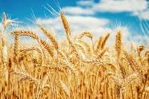

Revolução Verde
Revolução Verde consistiu na incorporação de inovações tecnológicas na agricultura. No Brasil, a modernização teve início em conjunto com a expansão da fronteira agrícola. A Revolução Verde consistiu na modernização da agricultura em escala global, efetivada por meio da incorporação de inovações tecnológicas na produção. Teve como base as sementes geneticamente modificadas, os maquinários agrícolas e os insumos químicos, como fertilizantes e agrotóxicos. No Brasil, a incorporação técnica foi feita por meio de incentivos governamentais concomitantemente à expansão das fronteiras agrícolas para as regiões de Cerrado.
A expressão “Revolução Verde” é empregada para designar o processo de transformação na agricultura em escala global que se deu por meio do desenvolvimento e incorporação de novos meios tecnológicos na produção. Esse fenômeno teve início na segunda metade do século XX, entre as décadas de 1960 e 1970. Pode ser chamada também de Paradigma da Revolução Verde, por ter representado uma mudança profunda na forma de produzir-se no campo e no aparato técnico utilizado para o desenvolvimento da produção agropecuária.
As inovações tecnológicas adotadas inicialmente em países como México e Estados Unidos, e que tão logo se propagaram para o restante da América Latina e para a Ásia, iam desde as etapas iniciais de preparo e seleção até a outra extremidade da cadeia produtiva, no processo de colheita.Características da Revolução Verde
modernização da agricultura que aconteceu em meados do século XX teve como principal característica a adoção de tecnologias modernas na produção e na criação de animais. As novas técnicas que se desenvolveram a partir da década de 1940 foram baseadas em extensas pesquisas científicas que, com o passar do tempo, ampliaram-se e deram origem a uma série de inovações que passaram a ser empregadas no campo. Essas pesquisas foram realizadas pelo financiamento oriundo de indivíduos e entidades privadas, e também por meio do Estado via agências estatais de pesquisa,como aconteceu no Brasil.

Origem da Revolução Verde
A Revolução Verde teve início na segunda metade do século XX, entre as décadas de 1960 e 1970, quando houve maior difusão das inovações tecnológicas no meio agrícola. Entretanto, os passos iniciais para essa mudança de paradigma e as suas principais motivações já se encontravam no período precedente. O contexto da Segunda Guerra Mundial (1939-1945) colocou em questão a necessidade de garantia da segurança alimentar em ampla escala. Para que esse objetivo fosse possível, era imprescindível a maior oferta de alimentos com base em um ganho de produtividade na agricultura. Esse foi um dos motivadores do processo de inovação tecnológica no campo, embora não tenha sido o único. Os maiores financiadores de pesquisas nesse período foram grupos privados, entre eles a Fundação Rockfeller, que investiu em estudos voltados ao melhoramento genético de cultivos como o trigo e o milho. Liderando as pesquisas estava Norman Borlaug, que dirigiu o Programa de Produção Cooperativa de Trigo no México, na década de 1940, uma parceria entre o governo mexicano e o grupo mencionado. Em conjunto com pesquisadores locais, Borlaug desenvolveu uma espécie de trigo resistente a doenças e de elevada produtividade. Tais resultados, que ajudaram no aumento da produção de cereais no México, renderam-lhe o Prêmio Nobel da Paz em 1970, sendo considerado atualmente o principal nome da Revolução Verde. 